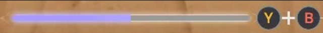
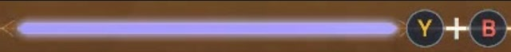

장판 이탈에 따른 불쾌감 해소
플레이 상황 예시“보스가 봉인부진을 벗어나면 환수부 쿨타임까지 소환수를 소환하기 어려워요.”
기대 효과
봉인부진을 2회 스택 구조로 변경하여 ‘보스가 움직이면 바로 따라가서 다시 깐다’는 능동적 대응이 가능해집니다.
플레이어의 동선 예측과 컨트롤 숙련도가 즉각적인 보상으로 돌아옵니다.

나 혼자만 레벨업: 어라이즈 오버 드라이브
모호성 / 게임 기획
기존 전용 무기인 ‘논리적 타당성’은 ‘봉인부진’ 적중 시 ‘공격력 약화’ 디버프를 강화시키며 ‘폭풍부’ 적중 시 무기 등급에 따른 확률로 대상에게 악몽 효과를 적용합니다.
두 스킬 모두 광역기로 이루어져 다수의 적을 상대로 전투하거나 광역 몹몰이에 유용한 무기입니다.
반면에 ‘봉인부진’과 ‘폭풍부’가 각각 22초와 20초, 서포트 스킬 ‘속.폭풍부’도 45초로 쿨타임이 매우 길기 때문에 한 번 빗나가는 경우에 이득을 보기 매우 힘듭니다.
더불어 ‘폭풍부’와 ‘속.폭풍부’는 사용 조건이 있어 원하는 타이밍에 발동시키기 어렵습니다.
특히 이동이 잦은 보스와의 1대1 상황이 많은 폐쇄 임무와 인스턴스 던전 등에서는 고정된 봉인부진과 폭풍부의 영역을 오랫동안 보스에게 피격시키는 것은 상당히 어렵습니다.
소환을 주력으로 하는 마법사인 것에 비해 주력 소환 스킬인 ‘환수부’의 쿨타임은 30초로 매우 깁니다. 강력한 소환수인 ‘두목시니’를 소환하기 위해서는 첫 소환부터 네 번째 소환까지 가속 없이 90초의 시간이 걸리게 됩니다.
심지어 오버 드라이브의 게이지 수급 조건이 ‘환수부’로 ‘어둑시니’나 ‘두목시니’를 소환하는 것이기 때문에 ‘환수부’ 스킬을 빨리 돌리는 것이 매우 중요합니다.
대신 봉인부진은 피격된 대상이 있는 경우 ‘환수부’의 남은 재사용 대기시간이 두 배 속도로 줄어, 가속이 계속되면 대기시간을 30초에서 15초로 줄여 주는 효과가 있습니다.
그렇기 때문에 플레이어가 ‘봉인부진’을 맞추는 것은 강력한 소환수와 오버 드라이브 게이지를 수급하기 위한 핵심 스킬이라고 볼 수 있습니다.
만약 ‘봉인부진’으로 제대로 적을 맞추지 못하는 경우 첫 환수부 사용 후 ‘두목시니’ 소환까지 90초, 빈 오버 드라이브 게이지를 채우기까지 30초라는 긴 예열 시간이 필요하게 됩니다.
봉인부진을 사용한 전투에서는 네 번째 환수부를 85.7초에, 사용하지 않은 전투에서는 104초에 썼습니다. 두 전투의 차이는 18.3초였습니다.
보스가 봉인부진을 벗어나면 환수부의 재사용 가속이 끊깁니다. 기존 플레이에서 골렘이 멀리 도약할 때, 뱀이 장판 가장자리를 오갈 때, 뱀이 잠깐 멈췄다가 다시 움직일 때를 골랐습니다.
영상에서는 보스가 어디를 떠나 어디에 머무는지 볼 수 있습니다. 같은 동선에 필연의 인과율의 등급별 충전 시간(C 21초 · B 20초 · A 19초 · S 18초)을 적용해 네 번째 환수부가 돌아오는 시점을 계산했습니다. 연속 이동 장면에서는 봉인부진을 바로 쓸 때와 다음 정지 지점까지 아낄 때를 비교할 수 있습니다.
보스의 이동을 구역 단위로 재현했습니다. 등급을 선택하면 같은 동선에서 장판이 언제 적중하고 네 번째 소환이 언제 돌아오는지 볼 수 있습니다.
보라색은 장판 적중으로 가속된 구간입니다. 소환수는 등장 순간에 표시됩니다. 소환 시각을 누르면 그 순간으로 이동합니다.
| 보스 이동 | C21초 | B20초 | A19초 | S18초 |
|---|---|---|---|---|
| 골렘 · 도약 | 62.00 | 60.15 | 59.90 | 57.75 |
| 뱀 · 가장자리 왕복 | 54.15 | 53.15 | 52.15 | 51.30 |
| 뱀 · 연속 이동 | 64.60 | 65.45 | 66.60 | 64.85 |
각 등급에서 보스를 맞힐 기회가 생기는 즉시 설치한 결과입니다. 첫 환수부 사용이 0초입니다.
영상에서 보스가 떠난 지점과 멈춘 지점을 표시했습니다. 봉인부진은 2충전으로 시작해 순차 회복하며 15초 동안 유지됩니다. 보스가 멈추면 0.5초 뒤 조준을 마칩니다. 장판이 보스 중심을 덮는 동안 환수부의 기본 대기시간 30초가 2배 속도로 줄어듭니다. 네 번째 소환으로 회복하는 충전은 다음 설치부터 사용합니다.
표와 소환 시계는 연출 시간을 제외합니다. 뱀의 몸통까지 장판에 남아 있다고 판정하면 연속 이동에서 즉시 설치한 A의 네 번째 환수부는 B보다 0.85초 빨라집니다. 영상에 보이는 것은 기존 스킬이며, 신규 무기의 적중 구역은 보스 중심의 이동으로 추정했습니다.
필연의 인과율은 1대1 보스전에서 보스의 기동성에 대응하여 봉인부진의 적중 안정성을 높이고, 환수부의 긴 재사용 대기시간과 4회 누적 소환 조건의 ‘두목시니’의 예열 구조를 압축해 오버 드라이브 순환율을 극대화하는 전술 무기입니다.
2회 충전 구조를 통해 플레이어가 보스의 이동 경로를 예측하거나, 이동 직후 재설치할 수 있는 유연성을 확보할 수 있게 합니다.
한 번 빗맞았을 경우에도 기회가 남아 있어 플레이어가 더 적극적, 전략적으로 봉인부진을 활용할 수 있게 됩니다.
논리적 타당성의 1대다 전투 특화와 달리 1대1 보스전에서 특화된 무기라는 차별점을 주기 위해 봉인부진의 범위를 줄였습니다.
대신, 단일 타깃을 지속적으로 추적할 수 있도록 S등급에서 쿨타임을 22초에서 18초로 압축하여 봉인부진의 스택 충전 속도를 소폭 높였습니다.
환수부 4회 누적이라는 긴 예열의 보상(두목시니 소환) 이후 다시 다음 사이클이 빠르게 순환될 수 있도록 기점이 되는 봉인부진을 열어주도록 설계하였습니다.
보스와 장기전으로 갈수록 전투 템포가 가속되는 손맛을 제공합니다.
2개의 장판을 겹쳐 깔았을 때 공격력 감소가 중첩되어 보스 화력이 0에 수렴하거나, 4배 가속으로 소환수가 과도하게 쏟아지는 문제를 원천 차단합니다.
중첩 설치는 오로지 ‘피격 판정 영역 확장 및 유지력 확보’를 위해서만 사용하게 합니다.
이보라의 기본 스킬셋은 위와 같은 명확한 계단식 구조
기존 스킬셋의 구조 속에서 앞서 두 가지의 병목을 언급했습니다.
보스가 봉인부진 사용 중 이동해도 예비 스택으로 도착 위치에 재사용하여 가속을 이어 나갈 수 있어 실수로 인한 전체 사이클의 정체 현상을 완화할 수 있습니다.
어둑시니를 세 번 부르면 다음 소환에서 두목시니가 등장합니다.


두목시니가 등장하면 오버 드라이브 게이지를 대량으로 얻습니다.
필연의 인과율을 장착하면 이때 충전 중인 봉인부진 1회분이 돌아옵니다. 보스가 이동하면 도착 지점에 다시 펼칩니다.
이보라의 오버 드라이브는 소환수가 필드에 머무르는 시간이 아니라 ‘소환 행위 자체’로 즉시 게이지가 수급됩니다.
따라서 환수부를 더 자주 돌리는 것 자체가 오버 드라이브 스킬(화살 세례 및 피해량 증가 연계)의 발동 빈도를 직접적으로 끌어올립니다.
폐쇄 임무, 인스턴스 던전 등 잡몹 구간 없이 보스와 1대1로 맞붙는 보스전 환경에서 다음과 같은 UX 개선 효과를 기대할 수 있습니다.
플레이 상황 예시“보스가 봉인부진을 벗어나면 환수부 쿨타임까지 소환수를 소환하기 어려워요.”
봉인부진을 2회 스택 구조로 변경하여 ‘보스가 움직이면 바로 따라가서 다시 깐다’는 능동적 대응이 가능해집니다.
플레이어의 동선 예측과 컨트롤 숙련도가 즉각적인 보상으로 돌아옵니다.
플레이 상황 예시“봉인부진의 긴 대기시간으로 무기력한 상황이 자주 있어 장기전에서 버티기 어려워요.”
봉인부진의 스택 구조와 환수부로 두목시니 소환 시 1회 초기화를 통해 공격력 감소 디버프를 더 길게 유지할 수 있습니다.
보스의 공격을 안전하게 억제하며, 소환수의 지속 피해와 잦은 오버 드라이브 발동으로 안정적인 공략을 선호하는 유저에게 쾌적한 플레이 경험을 제공합니다.
플레이 상황 예시“다른 헌터의 대미지를 증폭시키는 기존 플레이가 너무 정적이라 재미가 없어요.”
좁아진 장판을 보스의 이동 경로에 맞춰 1~2회 끊어서 전개할 수 있어 더 유동적으로 스킬을 사용하는 경험을 할 수 있습니다.
4회차 두목시니 소환과 동시에 스택이 회복되어 반복되는 사이클을 가속화하고, 역동적인 템포를 부여합니다.
기존 전용 무기 논리적 타당성의 가치를 훼손하지 않으면서, 전장 환경에 따라 두 무기를 전략적으로 선택할 수 있는 건강한 메타 다양화를 목표로 합니다.
넓은 장판 전개 후 짧은 순간에 아군의 폭딜을 유도
봉인부진을 지속적으로 설치하여 환수부의 두목시니와 오버 드라이브 발동 사이클을 압축
보스가 패턴으로 장판 이탈 시 디버프 및 쿨타임 가속의 공백 발생으로 환수부 및 오버 드라이브 게이지 습득이 지연
보스가 패턴으로 장판 이탈 시 남은 스택의 봉인부진을 재설치하고, 4회차 두목시니 소환 및 스택 초기화로 사이클 가속화
넓은 범위의 몹몰이와 받는 피해량 증폭으로 다수의 적을 한 번에 묶어 아군 광역기로 단기 섬멸
30% 축소된 범위로 인해 흩어진 잡몹을 한 번에 제압하기 어려움
2스택을 연달아 깔더라도 순간 화력 버프가 상대적으로 부족해 웨이브 정리 속도가 떨어짐
| 구분 | 논리적 타당성 | 필연의 인과율 |
|---|---|---|
| 핵심 역할 | 광역 군중 제어(몹몰이) 및 아군 화력 증폭 | 단일 타깃 추적, 디버프 상시 유지, 오버 드라이브 사이클 가속 |
| 주력 전장 | 다수전, 웨이브 방어, 움직임이 적은 고정형 보스 | 이동 패턴이 잦은 1대1 보스전, 장기전 |
| 주요 이점 | 단시간 폭딜 고점이 높고 다수 적 제압에 압도적 | 보스 기동성에 흔들리지 않는 안정성과 높은 오버 드라이브 회전율 |
| 명확한 한계 | 보스가 장판을 벗어나면 효율이 급감 | 범위 축소로 인한 광역 장악력 부족 및 순간 폭딜이 상대적으로 낮음 |